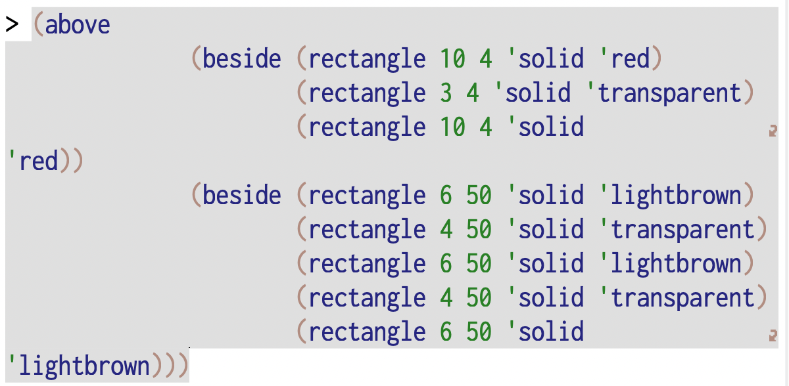
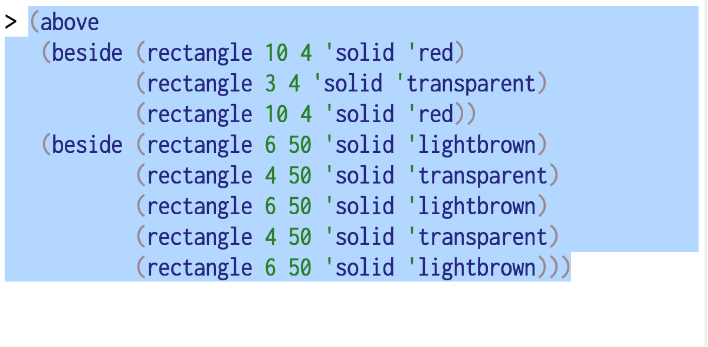
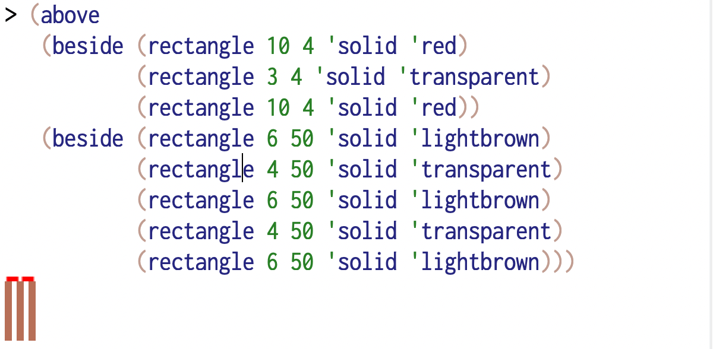
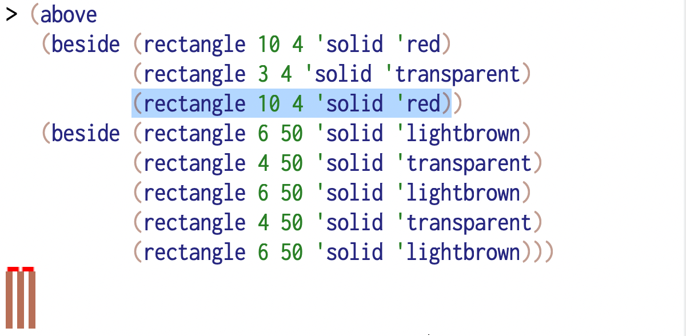
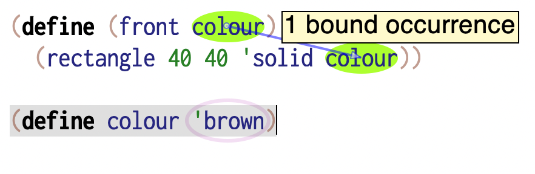
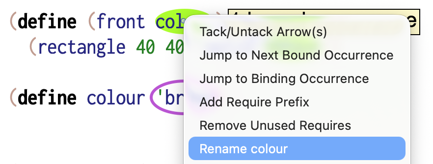

The editor¶
The text editor plays an important role in the practice of computing, a role that often goes unrecognized in what goes for “computer science”. When looking at programming as a literacy, the tools of the programmer also gain an importance, much like a type writer or a specific word processor will have a significance for a creative writer. We’ll look at DrRacket’s editor in the definitions and interactions windows a little so you can gain some familiarity with them.
Note
There are also general purpose editors such as Vim, Emacs and (more recently) Zed, which support multiple programming languages. For the purpose of this course, we recommend you stick with DrRacket to avoid being distracted by editor idiosyncrasies.
Conventions¶
We usually notate pressing the “Ctrl” key along with a letter, say, “x” as
C-x. Here, we’ll also use “C” to refer to the “Command” key on a Mac.Similarly, we notate pressing the “Alt” key (“Option” on a Mac) with a letter “x” as
M-xwhere “M” stands for “Meta”.The shift key with a letter “x” will be notated as “S-x”.
We’ll write special keys like arrows, like
<left>,<up-arrow>and such.
These may be combined. So M-C-x means “press the Alt key, the Ctrl key and then
type the key x”.
The usual suspects¶
Editor movements you’re familiar with in other common editors also work in DrRacket. These include -
C-xis “Cut selected text”C-cis “Copy selected text”C-vis “Paste selected text”<del>or<backspace>will delete the character immediately to the left of the cursor, or the current selection if there is one.
Term highlighting and selection¶
Compound terms of the form (<term> <term> ...) can be “nested” within
each other. So it is useful to know where a particular term ends if you’re
at a starting position, or vice versa.
When your cursor position is just before the start of a compound term or just after the end of such a term, DrRacket will highlight the whole term. When you see the term being highlighted, you can then select it with a single key stroke. This highlighting is a very important clue for you since all valuable operations when working with programs work on whole terms, compound or simple.
M-S-<rightarrow>will select the highlighted term to the right of the cursor, or the non-compound term immediately to its right.Similarly
M-S-<leftarrow>will operate on the highlighted term to the left of the cursor, or the non-compound term immediately to its left.
Non-compound terms like literals and identifiers will not be shown as highlighted.
This highlighting and selection works the same way in the definitions window as well as in the interactions window.
Sometimes you’ve broken sub-terms onto separate lines but not aligned them up
in a legible manner. To do this, just select the term in the definitions window
and press the <tab> key. In fact, you can select the entire contents of the
window using C-a and press the <tab> key to align everything in the
window. What this won’t do for you is to break things up into lines, as how
that is done is generally considered a “matter of taste”.
Evaluating expressions¶
Getting DrRacket to tell you what an expression refers to is called “evaluation”, for “finding out the value of”. Remember that “value” is what we used to refer to a representation of a thing stored in computer memory. We’ve also said things like “identifiers refer to values”.
You do this by typing or pasting the term whose value you want to know, at
the interaction window’s “prompt” which looks like :hl`>`, and pressing the
<enter> key with your cursor at the end of the term. If your cursor happens
to be somewhere in the middle of a term, then pressing <enter> will
break the line at that point and create a multi-line term.
If you want to evaluate the whole term in the interaction window prompt when
your cursor is in the middle of the term somewhere other than at the end, you
can just press M-<enter>. The figures below show the various editing options.

Fig. 8 When you copy a multi-line compound term from the definitions window and paste it into the interactions window, it will appear literally as is at first.¶

Fig. 9 When you’re in the situation of Fig. 8, you can
select the whole term using M-S-<right> and press <tab> to properly
align the sub-terms as shown here.¶

Fig. 10 In the interactions window, when you have an active expression at the prompt
and you want to evaluate it when your cursor is not at the end of the expression,
you can press M-<enter>.¶

Fig. 11 If you’ve already evaluated an expression in the interaction window and wish
to examine one of its sub-terms (a.k.a. sub-expressions), you can select the
sub-term and press M-<enter> to bring it into the active prompt.
Pressing <enter> again will evaluate just that term. This is a short cut
for copying that selection and pasting it into the active prompt using C-c
C-v.¶
To recall the earlier evaluated term in the interaction window, press the
<Esc> key followed by p. We will write this as <Esc> p, which means
“press and release <Esc> and then press and release p”. [1] You
can step back into the history by pressing <Esc> p as many times as you
need. Analogously, pressing <Esc> n will get you the “next” expression in
the evaluation sequence. Using these two, therefore, you can “walk” up and down
the history of expressions you’ve evaluated at the interaction prompt.
Getting help¶
DrRacket’s definitions window facilities provide access to documentation pertaining
to identifiers provided by packages. With your edit cursor positioned on such an
identifier (say define), point your mouse at the top right corner of the
definitions window to have a panel open up with information that reminds you
how to use define. To read its full documentation, you can then click the
read more … link within the pane.

Fig. 12 The usage and contracts are displayed in the reminder in the popup panel.
Here you see the panel for 2htdp/image package’s triangle.¶

Fig. 13 When you click the read more … link in the Fig. 12, you’re taken to the page contents shown here. In the documentation, you’ll not only find the argument and result “contracts” that the usage must meet / can expect.¶
Renaming¶
You’ve seen DrRacket draw arrows from the definition context of an identifier to its use context. This means it keeps track of each group of identifiers which share a definition context. Even when you use the same name in a different context, Racket treats them as different (and so would any programming language).
Therefore if you want to give a different and more meaningful name for an identifier in a given context, you’d want to change all of its occurrences only in that context, without changing it in any other context where the same word might’ve been used to mean something else.
To do such a context aware renaming, right-click on the identifier and select “Rename”.

Fig. 14 The first occurrence of colour is “local” to the context introduced
by the front abstraction. [2] The identifiers that are its
“arguments” take meaning only within the expression contained in the
(define ...) term.¶

Fig. 15 The right-click menu (a.k.a. context menu) on an identifier presents an item called “Rename” that lets you rename the identifier in the context of the identifier at the clicked position. This isn’t a plain textual “find and replace” operation as it is context aware and helps you clarify your program by choosing good names.¶
Closing remarks¶
As noted at the start, the editor plays a role in gaining a visceral feel for programs you work on. From a situated cognition perspective, one might say the editor participates in the construction of your mental models of a program as you go further in your journey, and the tool becomes an extension of your thinking over time. It is for this reason that programmers gravitate towards and stick with their “favourite” editors over their careers.
We use DrRacket in this course for its pedagogical design value. Few editors are deeply integrated with the semantics of programming languages, and they rely on various “plugins” to support such features. Some good ones that have stood the test of time are Emacs, Vim (Neovim). A relatively recent entrant that has gained wide adoption due to its flexibility and extension ecosystem is Visual Studio Code. Of these, Emacs is legendary for its extensive support for not just editing Common Lisp programs, but also directly working with the live environments deployed programs. This was possible because Emacs is itself programmable in Emacs LiSP.
So take every opportunity to get familiar with the editor as you progress through this course.